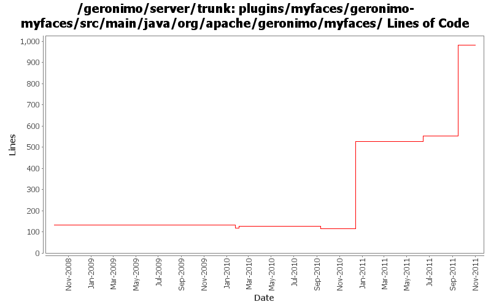

[root]/plugins/myfaces/geronimo-myfaces/src/main/java/org/apache/geronimo/myfaces
 config
(0 files, 0 lines)
config
(0 files, 0 lines)
 annotation
(0 files, 0 lines)
annotation
(0 files, 0 lines)
 resource
(1 files, 109 lines)
resource
(1 files, 109 lines)
 osgi
(3 files, 425 lines)
osgi
(3 files, 425 lines)
 api
(1 files, 79 lines)
api
(1 files, 79 lines)
 facelet
(1 files, 55 lines)
facelet
(1 files, 55 lines)
 info
(2 files, 509 lines)
info
(2 files, 509 lines)
 webapp
(3 files, 313 lines)
webapp
(3 files, 313 lines)

| Author | Changes | Lines of Code | Lines per Change |
|---|---|---|---|
| Totals | 30 (100.0%) | 972 (100.0%) | 32.4 |
| xuhaihong | 15 (50.0%) | 926 (95.3%) | 61.7 |
| gawor | 4 (13.3%) | 34 (3.5%) | 8.5 |
| djencks | 7 (23.3%) | 12 (1.2%) | 1.7 |
| jlaskowski | 4 (13.3%) | 0 (0.0%) | 0.0 |
GERONIMO-6204 Decouple OpenWebBeans from web container
11 lines of code changed in 1 file:
Comment out the clean up codes for FactoryFinderProviderFactory, as MyFaces will think it is an initialization error
2 lines of code changed in 1 file:
Use the web identity string as the key
1 lines of code changed in 1 file:
Minor change to the debug log output, make sure the factory map could be print before it is cleared
4 lines of code changed in 1 file:
GERONIMO-6145 Factory info should not be shared among those web jsf applications in one EAR package
430 lines of code changed in 3 files:
GERONIMO-6006 Upgrade MyFaces to 2.0.7
The most change is to use one LifecycleProviderFactory for each web application, as MyFaces will not use a static variable to host it in the LifeccyleProviderFactory
63 lines of code changed in 5 files:
GERONIMO-5713 MyFaces 2.0.3 Integration
412 lines of code changed in 2 files:
GERONIMO-5561 First step changes, use a MyFacesWebAppContext GBean holds all the meta data, including faces configuration URLs and anntations. Once update to 2.0.3, some hack codes could be removed, and we might even store the final info data, as MyFaces would provide some more SPI.
3 lines of code changed in 1 file:
GERONIMO-5567 adapt myfaces to new way to add listeners
2 lines of code changed in 1 file:
XBEAN-148 use new xbean-bundleutils
1 lines of code changed in 1 file:
make sure BundleClassLoader.getBundle() does not return DelegatingBundle
1 lines of code changed in 1 file:
GERONIMO-4996: Lookup LifecycleProvider based on Bundle instead of ClassLoader. ClassLoaders even for the same Bundle might be different objects.
33 lines of code changed in 3 files:
GERONIMO-4996 GERONIMO-5025 separate jndi context setup from web app context since jsf needs it too. Hook up myfaces which now starts. Don't know if myfaces works
9 lines of code changed in 1 file:
header fixes (Rev, Date)
0 lines of code changed in 4 files:
GERONIMO-4258 clean up some naming constant usage
0 lines of code changed in 4 files: